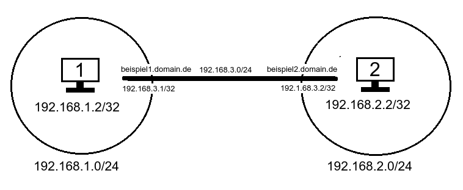

WireGuard
Dieser Artikel wurde für die folgenden Ubuntu-Versionen getestet:
Ubuntu 16.04 Xenial Xerus
Zum Verständnis dieses Artikels sind folgende Seiten hilfreich:
WireGuard  ist eine Virtual-Private-Network-Software, welche als Alternative zu bekannten VPN-Lösungen wie OpenVPN und IPsec entwickelt wird. Es soll im Vergleich zu OpenVPN und IPsec einfacher zu konfigurieren sein sowie schneller und effizienter. WireGuard ist für unterschiedlichste Plattformen verfügbar. Im Gegensatz zu den anderen Lösungen basiert es nicht auf der Client-Server-Architektur, sondern auf der Peer-to-Peer-Architektur.
ist eine Virtual-Private-Network-Software, welche als Alternative zu bekannten VPN-Lösungen wie OpenVPN und IPsec entwickelt wird. Es soll im Vergleich zu OpenVPN und IPsec einfacher zu konfigurieren sein sowie schneller und effizienter. WireGuard ist für unterschiedlichste Plattformen verfügbar. Im Gegensatz zu den anderen Lösungen basiert es nicht auf der Client-Server-Architektur, sondern auf der Peer-to-Peer-Architektur.
Installation¶
Da es sich hierbei noch um ein sehr junges Projekt handelt, sind die Pakete leider noch nicht in den offiziellen Paketquellen enthalten und müssen als Fremdquelle hinzugefügt werden. Dies sollte sich aber mit der nächsten LTS-Version von Ubuntu ändern.
Adresszeile zum Hinzufügen des PPAs:
ppa:wireguard/wireguard
Hinweis!
Zusätzliche Fremdquellen können das System gefährden.
Ein PPA unterstützt nicht zwangsläufig alle Ubuntu-Versionen. Weitere Informationen sind der  PPA-Beschreibung des Eigentümers/Teams wireguard zu entnehmen.
PPA-Beschreibung des Eigentümers/Teams wireguard zu entnehmen.
Damit Pakete aus dem PPA genutzt werden können, müssen die Paketquellen neu eingelesen werden.
Nach dem Aktualisieren der Paketquellen kann folgendes Paket installiert werden [1]:
wireguard-dkms (ppa [2])
wireguard-tools (ppa)
 mit apturl
mit apturl
Paketliste zum Kopieren:
sudo apt-get install wireguard-dkms wireguard-tools
sudo aptitude install wireguard-dkms wireguard-tools
Konfiguration¶

Vorbereitung¶
Wenn keiner der beiden Clients eine feste globale IP Adresse hat, sollte man diese zuerst konfigurieren. Hierbei hilft das erstellen einer Domain, welche mit der neuesten dynamischen Adresse verbunden ist. Erklärt wird dies in diesem Artikel DDNS-Clients
Einmalige Konfiguration¶
Client 1¶
Als erstes sollte man die erforderlichen Schlüssel im Verzeichnis /etc/wireguard generieren. [3][6]
cd /etc/wireguard sudo wg genkey > private.key sudo wg pubkey > public.key < private.key sudo wg genpsk > psk.key
Nun erstellt man die Schnittstelle mit einer Adresse, einem Namen und weist ihr einen Private Key zu.
sudo ip link add wg0 type wireguard sudo ip addr add 192.168.3.1/24 dev wg0 sudo wg set wg0 private-key ./private
Dann kann man die Schittstelle starten.
sudo ip link set wg0 up
Zur Überprüfung sollte man nun dieses Kommando ausführen:
sudo wg
Hierbei sollte jetzt eine Ausgabe erscheinen, in der man sich den "Listen Port" merken sollte. Als letztes muss man dann noch Client 2 dem Client 1 bekannt machen. Sodass er sich mit diesem verbinden könnte.
sudo wg set wg0 peer "Public Key von Client 2" preshared-key "Preshared Key von Client 1 und 2" allowed-ips 192.168.3.2/32 endpoint beispiel2.domain.de:port
Client 2¶
Das gleiche sollte man nun auch bei Client 2 tun. Der "Preshared Key" muss nicht mehr neu erstellt werden, da er auf beiden Clients identisch sein muss. Deswegen sollte man ihn übertragen.
cd /etc/wireguard sudo wg genkey > private.key sudo wg pubkey > public.key < private.key
sudo ip link add wg0 type wireguard sudo ip addr add 192.168.3.2/24 dev wg0 sudo wg set wg0 private-key ./private sudo ip link set wg0 up
sudo wg
sudo wg set wg0 peer "Public Key von Client 1" preshared-key "Preshared Key von Client 1 und 2" allowed-ips 192.168.3.1/32 endpoint beispiel1.domain.de:port
Statische Konfiguration¶
Damit es nicht nur bei einer einmaligen Konfiguration, welche beim Neustart verloren geht, bleibt. Müssen bei jedem Client die Datei /etc/wireguard/wg0 erstellt werden und die Datei /etc/network/interfaces editiert werden.
Client 1¶
Dies muss in die Datei /etc/network/interfaces hinzugefügt werden. [4]
auto wg0
iface wg0 inet manual
pre-up ip link add wg0 type wireguard
pre-up ip addr add 192.168.3.1/24 dev wg0
pre-up wg setconf wg0 /etc/wireguard/wg0.conf
up ip link set wg0 up
down ip link delete wg0Nun muss diese Datei /etc/wireguard/wg0.conf erstellt werden.
[Interface] PrivateKey = Privat Key von Client 1 ListenPort = 50002 [Peer] PublicKey = Public Key von Client 2 PresharedKey = Preshared Key von Client 1 und 2 Endpoint = beispiel2.domain.de:50002 AllowedIPs = 192.168.3.2/32
Weil in dieser Datei sicherheitskritische Schlüssel enthalten sind, sollte man auf jeden Fall die Rechte für die Datei einschränken. [5]
sudo chmod 0600 /etc/wireguard/wg0
Client 2¶
Auch hier müssen diese Zeilen in die Datei /etc/network/interfaces hinzugefügt werden.
auto wg0
iface wg0 inet manual
pre-up ip link add wg0 type wireguard
pre-up ip addr add 192.168.3.2/24 dev wg0
pre-up wg setconf wg0 /etc/wireguard/wg0.conf
up ip link set wg0 up
down ip link delete wg0Und diese Datei /etc/wireguard/wg0.conf mit diesen Zeilen erstellt werden.
[Interface] PrivateKey = Privat Key von Client 2 ListenPort = 50002 [Peer] PublicKey = Public Key von Client 1 PresharedKey = Preshared Key von Client 1 und 2 Endpoint = beispiel1.domain.de:50002 AllowedIPs = 192.168.3.1/32, 192.168.1.0/24
Auch die Rechte für diese Datei sollte man auf jeden Fall einschränken.
sudo chmod 0600 /etc/wireguard/wg0
Client 3 und mehr¶
Um noch mehr Clients hinzuzufügen muss die Grundkonfiguration wie zuvor erklärt, eingefügt und abgeändert werden.
Und bei dem Clienten (1 oder 2), mit dem man sich verbinden will, muss man in der /etc/wireguard/wg0 nur den Abschnitt [Peer] vervielfältigen.
LAN miteinbeziehen¶
Damit der Client auch mit dem Netzwerk hinter dem anderen Client kommunizieren können, muss man bei allen Clients in der Datei /etc/network/interfaces Routen erstellt werden und bei allen Clients in der Datei /etc/wireguard/wg0.conf den Adressbereich des anderen Netzes hinzufügen.
Client 1¶
In der Datei /etc/network/interfaces muss nur eine einzige Zeile hinzugefügt werden. [7]
auto wg0
iface wg0 inet manual
pre-up ip link add wg0 type wireguard
pre-up ip addr add 192.168.3.1/24 dev wg0
pre-up wg setconf wg0 /etc/wireguard/wg0.conf
up ip link set wg0 up
post-up ip route add 192.168.2.0/24 via 192.168.3.1 dev wg0 #Diese Zeile muss hinzugefügt werden
down ip link delete wg0Und auch in dieser Datei /etc/wireguard/wg0.conf muss nur eine Zeile eingefügt werden.
[Interface] PrivateKey = Privat Key von Client 1 ListenPort = 50002 [Peer] PublicKey = Public Key von Client 2 PresharedKey = Preshared Key von Client 1 und 2 Endpoint = beispiel2.domain.de:50002 AllowedIPs = 192.168.3.2/32, 192.168.2.0/24 #Hier muss der Adressbereich des anderen Netzes hinzugefügt werden
Client 2¶
Das selbe auch beim zweiten Client. In der Datei /etc/network/interfaces fügt man wieder dies ein:
auto wg0
iface wg0 inet manual
pre-up ip link add wg0 type wireguard
pre-up ip addr add 192.168.3.2/24 dev wg0
pre-up wg setconf wg0 /etc/wireguard/wg0.conf
up ip link set wg0 up
post-up ip route add 192.168.1.0/24 via 192.168.3.2 dev wg0 #Diese Zeile muss auch hier hinzugefügt werden
down ip link delete wg0Und in diese Datei /etc/wireguard/wg0.conf das:
[Interface] PrivateKey = Privat Key von Client 2 ListenPort = 50002 [Peer] PublicKey = Public Key von Client 1 PresharedKey = Preshared Key von Client 1 und 2 Endpoint = beispiel1.domain.de:50002 AllowedIPs = 192.168.3.1/32, 192.168.1.0/24 #Hier muss wieder der Adressbereich des anderen Netzes hinzugefügt werden
Achtung!
Es darf kein Adressbereich in der Datei /etc/wireguard/wg0 zweimal vorhanden sein, ansonsten wird bloß das erste Vorkommen beachtet und alle anderen nicht.
Problembehebung¶
Kein Verbindung möglich¶
Wenn keine Verbindung zwischen beiden Clients zustande kommt, sollte man sowohl die Firewall als auch die Portweiterleitung überprüfen.
Probleme mit der dynamischen IP¶
auch wenn die Domainauflösung dynamischer IP Adressen unterstützt wird, passiert dies nur beim Start der Schnittstelle. Wenn sich in der Laufzeit die IP eines Clienten ändert, hilft nur ein Neustart der Schnittstelle:
sudo ifdown wg0 && sudo ifup wg0
Um dieses Problem dauerhaft zu umgehen, hilft im Moment nur ein Cronjob in kombination mit einem Skript für jeden Client, welcher sich mit diesem Client verbinden soll.
Um zu vermeiden, dass die Schnittstelle unnötig oft neu gestartet wird, erstellt man eine Datei mit diesem Inhalt, welches die Domain auflöst und überprüft, ob sich diese geändert hat. Hier sinnbildlich für Client 1.
#!/bin/bash
file="/tmp/digIP.txt"
digIP=$(dig +short beispiel2.domain.de) # Diese IP muss natürlich angepasst werden
#echo "$digIP"
if [ -e "$file" ]
then
fileTXT=$(cat "$file")
if [ "$digIP" != "$fileTXT" ]
then
#echo "Daten sind gleich"
/sbin/ifdown wg0
/sbin/ifup wg0
echo "$digIP" > "$file"
fi
else
echo "$digIP" > "$file"
fiDanach sollte man die Datei ausführbar machen:
sudo chmod +x "Pfad zum Skript"
und in die Crontabelle trägt man zum Beispiel folgendes ein:
#sudo crontab -e # Aufruf der Crontabelle für Befehle mit root-Zugriff */10 * * * * "Pfad zum Skript" # Führt das Skript alle 10 Minuten aus
Fehler "Netzwerkschnittstelle nocht konfiguriert" beim Befehl ifdown wg0¶
Wenn dieser Fehler auftritt, hilft das manuelle Löschen der Schnittstelle:
sudo ip link delete wg0
- Erstellt mit Inyoka
-
 2004 – 2017 ubuntuusers.de • Einige Rechte vorbehalten
2004 – 2017 ubuntuusers.de • Einige Rechte vorbehalten
Lizenz • Kontakt • Datenschutz • Impressum • Serverstatus -
Serverhousing gespendet von